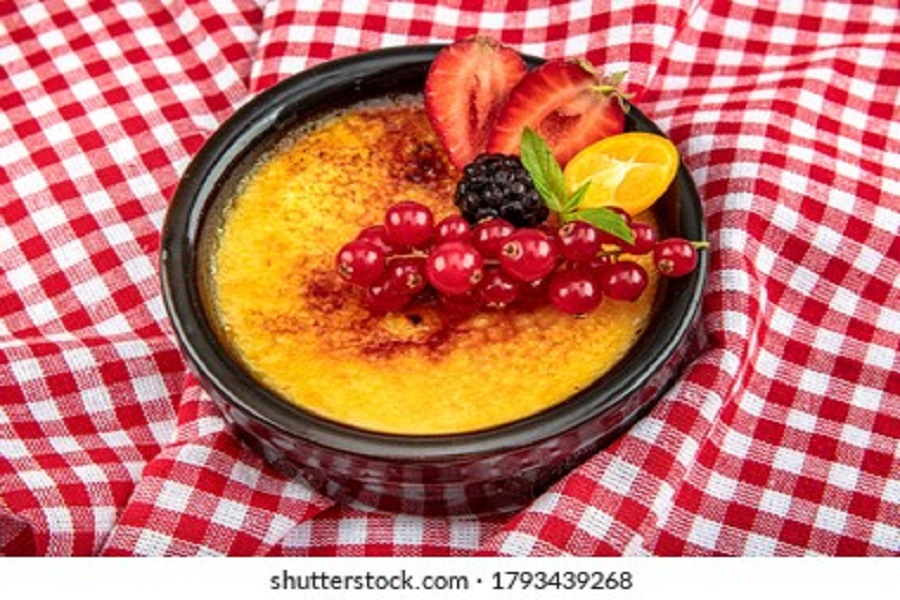
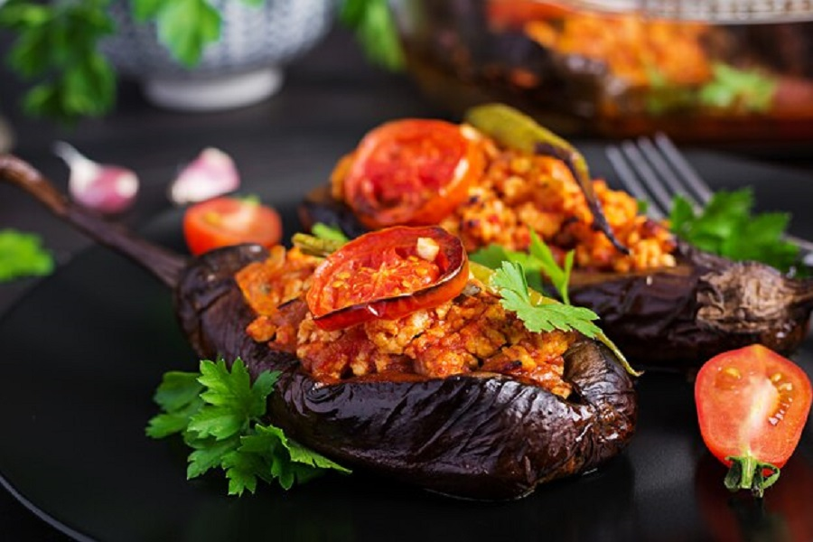

Simit is a circular bread, typically encrusted with sesame seeds or, less commonly, poppy, flax or sunflower seeds, found across the cuisines of the former Ottoman Empire, and the Middle East. Simit's size, crunch, chewiness, and other characteristics vary slightly by region

Muhallebi
Muhallebi is a light and delicious milk pudding that's popular throughout Turkey, the Middle East and beyond, muhallebi should be part of anyone's repertoire! It’s said that muhallebi gained prominence when a Persian cook served it to the Arab general by the name of al Muhallab bin Abi Sufra in the 7th century. The general loved it so much, he ever so humbly named it after himself.

Karniyarik
Karniyarik is one of the most popular eggplant recipes in Turkish cuisine.Traditionally, the stuffing is a mixture of sauteed onions, ground meat and tomatoes. What makes these stuffed eggplants unique from other similar Turkish eggplant recipes is the way they are prepared. The eggplants are roasted, then slit open in the middle, filled with stuffing, and further baked. That’s why the name “karniyarik” can be translated as “split belly”.
Turkish Lamb Shish Kebab
Shish kebab, dish of small pieces of lamb threaded on a skewer and cooked over an open fire. The name of the dish is derived from the Turkish şiş, meaning a spit or skewer, and kebab, mutton or lamb. Variants of this dish are found throughout the Balkans, the Middle East, and the Caucasus.
Roast Sumac Chicken
Known in Arabic as "Musakhan", this is often considered the national dish of Palestine. Chicken is soured with sumac and roasted with caramelized onions, creating a rich sauce that is sopped up with taboon bread. If you can't find taboon, thick pita or even naan make great substitutes.
Turkish Shepherd Salad
Shepherd's salad, also called Choban Salad,or Çoban salatası, is a Turkish salad consisting of chopped cucumbers, tomatoes, peppers, onion, and parsley. It is typically topped with a dressing of olive oil, lemon juice, and salt.
Lebanese Moussaka (Maghmour)
Maghmour is a thick, velvety Lebanese vegetarian eggplant stew with chickpeas, garlic, onions, and tomatoes with a smoky, slightly spicy flavor. Maghmour is a dish that dates back to the end of the 19th century; sometimes called Lebanese Moussaka. However, it is quite different from the Greek moussaka; a casserole made with layers of eggplant, béchamel, and meat. Moussaka is an Arabic word that means chilled. Maghmour is served at room temperature or chilled.
Bulgur Salad
Bulgur is made from durum wheat which has been boiled, dried and crushed. There are two basic varieties: Coarse and fine. Coarse bulgur (pilavlik in Turkish) is roughly the size of a rice grain and is often a good substitute for both rice and couscous. Fine bulgur (köftelik in Turkish) is much finer and is used for kibbeh and içli köfte, the deep fried stuffed bulgur wheat balls so popular in Lebanon and Turkey, and finer salads such as tabbouleh.